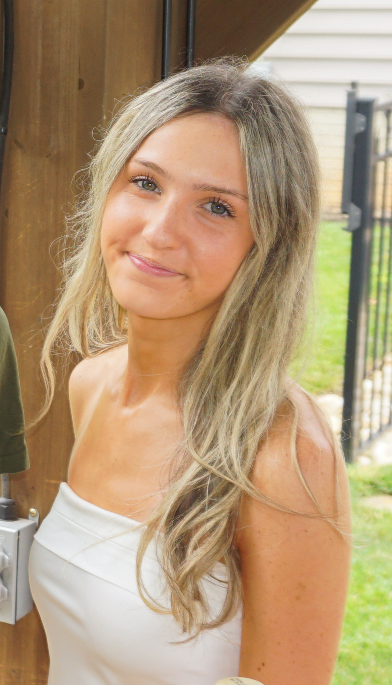

I am a currently a sophomore at the University of Maryland. I attended Tuscarora High School, where I graduated with highest honors. I am pursuing a major in journalism, while simultaneously minoring in astronomy, focusing specifically on cosmology, the study of the origin and fate of the universe.
I am currently focusing on science writing and reporting, specifically on space. Through my writing and journalistic skills, I hope to translate highly complex topics into comprehensive explanations for the general public. It is important for people to understand the world and the universe in which they live, and it should not be a struggle to do so. Ultimately, I hope to intern and work at NASA as a space journalist, working on various parts of their media team.